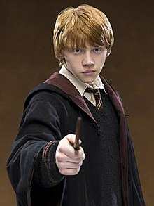

Ronald Bilius Weasley is a fictional character in J. K. Rowling's Harry Potter series. His first appearance was in the first book of the series, Harry Potter and the Philosopher's Stone, as the best friend of Harry Potter and Hermione Granger. He is a member of the Weasley family, a pure blood family, who reside in "The Burrow" outside Ottery St. Catchpole. A long with Harry and Hermione, he is a member of the Gryffindor house. Ron is present in most of the action throughout the series.
